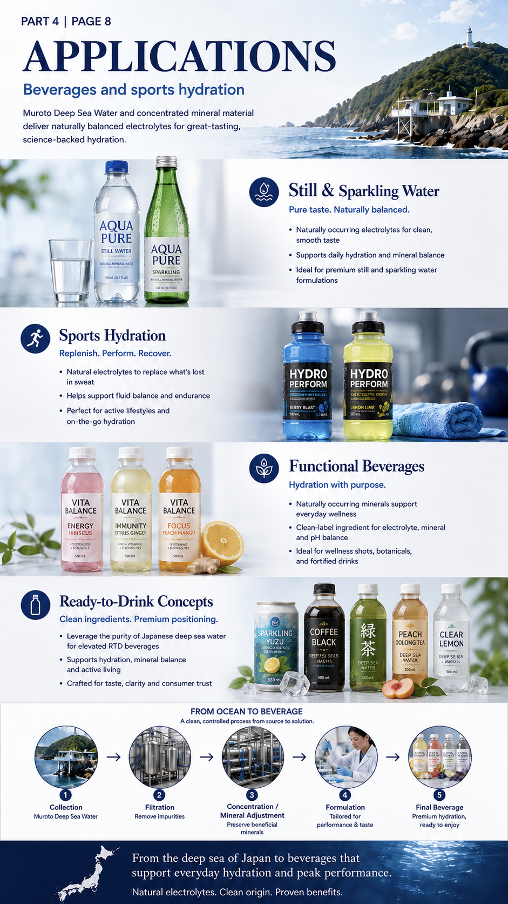
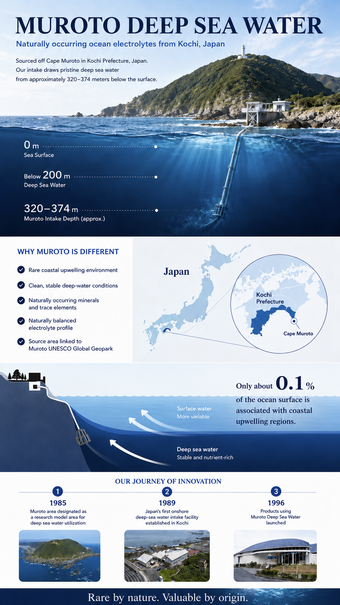
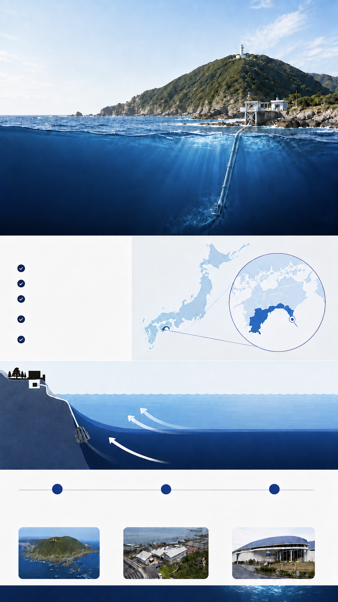
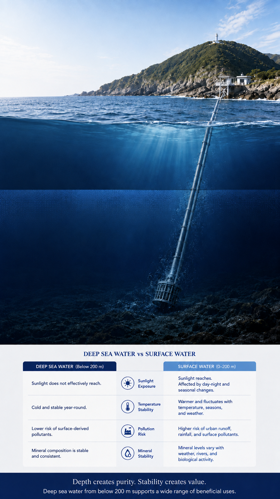
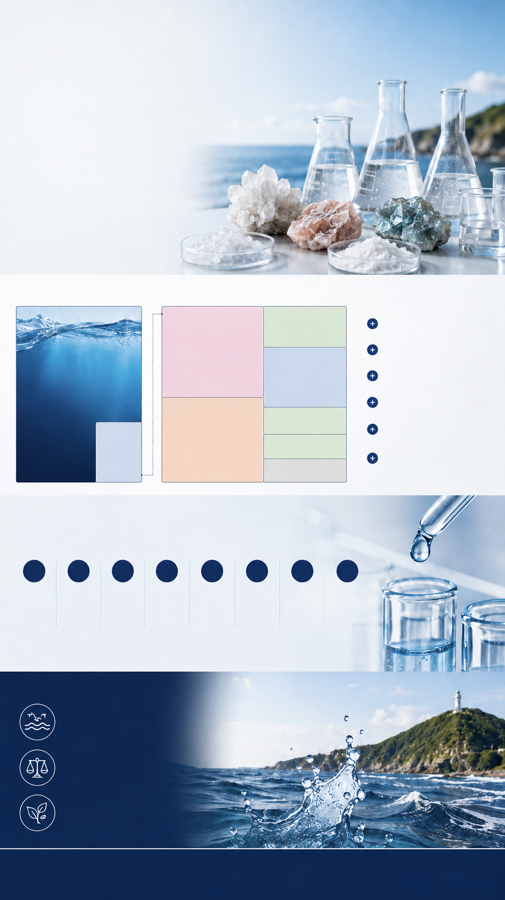
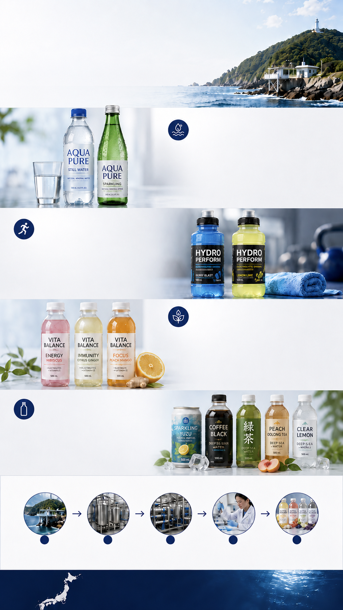
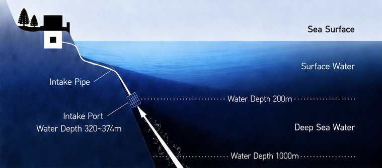
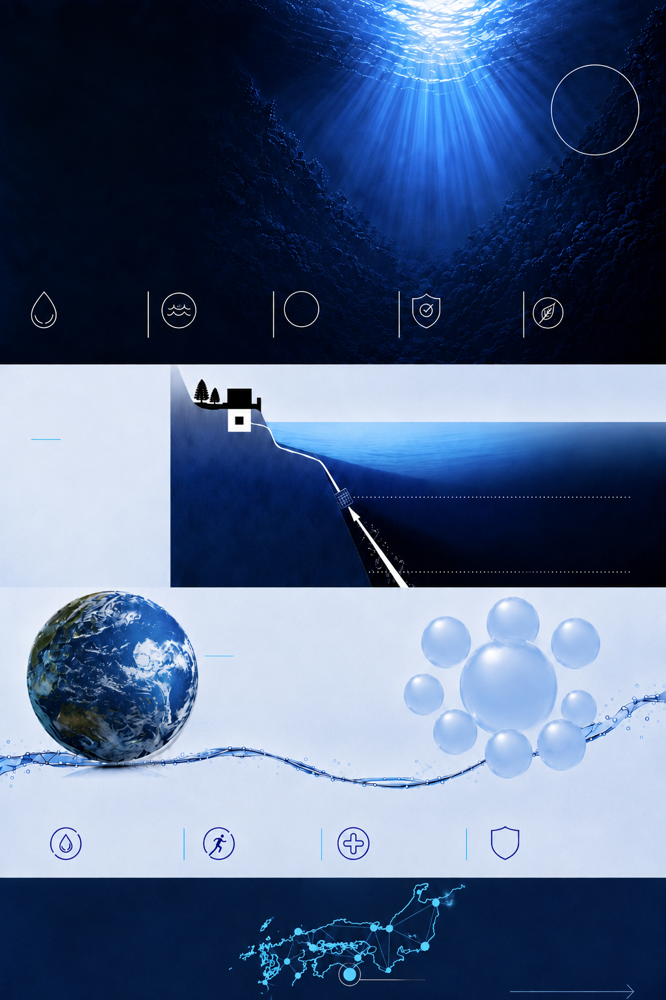

Still & Sparkling Water
Pure taste. Naturally balanced.
- Naturally occurring electrolytes for clean, smooth taste
- Supports daily hydration and mineral balance
- Ideal for premium still and sparkling water formulations


Coastal upwelling

Muroto area designated as a research model area for deep sea water utilization
Japan’s first onshore deep-sea water intake facility established in Kochi
Products using Muroto Deep Sea Water launched
Why depth matters
What deep sea water means and why depth matters
Deep sea water generally refers to seawater collected from depths below 200 m, where sunlight does not effectively reach. The environment stays cold and stable, and short-term surface fluctuations have less influence.

| Deep Sea Water (Below 200 m) | Surface Water (0–200 m) | |
|---|---|---|
| Sunlight does not effectively reach. | Sunlight Exposure | Sunlight reaches. Affected by day–night and seasonal changes. |
| Cold and stable year-round. | Temperature Stability | Warmer and fluctuates with temperature, seasons, and weather. |
| Lower risk of surface-derived pollutants. | Pollution Risk | Higher risk of urban runoff, rainfall, and surface pollutants. |
| Mineral composition is stable and consistent. | Mineral Stability | Mineral levels vary with weather, rivers, and biological activity. |
Depth creates purity. Stability creates value.
Deep sea water from below 200 m supports a wide range of beneficial uses.
Supports natural mineral balance
Found in stable, natural ratios
Essential ocean electrolyte
Primary electrolyte in seawater
Most abundant anion
Important oxygen-carrying anion in seawater
Deep sea water contains a wide spectrum of naturally occurring trace components. These are present in tiny amounts but reflect the ocean’s rich mineral environment.
Many more trace elements are present in naturally occurring, ultra-low concentrations.

Minerals and trace elements are dissolved through natural oceanic processes over thousands of years.
Deep ocean conditions help maintain a consistent and stable mineral profile.
Collected from below the surface, far from surface pollution and seasonal variability.
Pure. Natural. Naturally balanced. The ocean provides. We preserve.
Pure taste. Naturally balanced.

Replenish. Perform. Recover.
Hydration with purpose.
Clean ingredients. Premium positioning.
A clean, controlled process from source to solution.
Muroto Deep Sea Water
Remove impurities
Preserve beneficial minerals
Tailored for performance & taste
Premium hydration, ready to enjoy
From the deep sea of Japan to beverages that
support everyday hydration and peak performance.
Natural electrolytes. Clean origin. Proven benefits.

Naturally filtered at great depth
Over 60+ trace minerals
Mg2+ > Ca2+
balance
Stable composition all year round
Utilizing ocean sustainably
We draw water from deep beneath the ocean surface, far from sunlight and surface pollution, ensuring exceptional purity.

Deep Sea Water contains a balanced profile of minerals and trace elements essential to life and well-being.
Areas where upwelling occurs account for only0.1%of the world’s oceans.
We have been dedicated to harnessing the power of Deep Sea Water from the Muroto area, a UNESCO Global Geopark in Kochi, Japan. Backed by advanced technology and strict quality control, we deliver nature’s gift to support a healthier future.
UNESCO Global Geopark
Visit Official Site